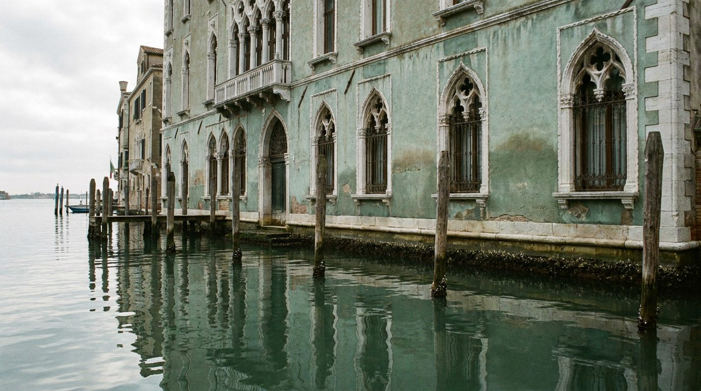
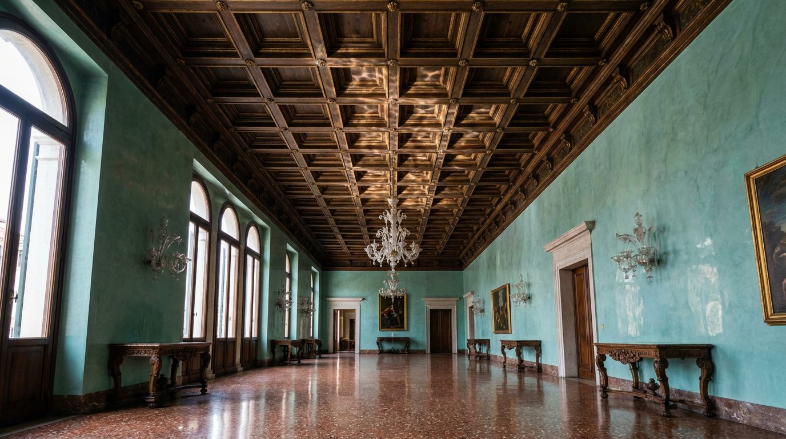

Atlante · IT-03 · Italia · Nord
Dimora veneziana affacciata sul canale
Esempi · esterno e interno


Architettura · elementi riproducibili
- pianta a portego (salone passante), soffitti a cassettoni lignei o volte affrescate, altezza 4,5-5,5 m
- pareti a stucco lucido colorato (verde acqua, rosso veneziano) con zoccolo in pietra
- pavimento a seminato veneziano (marmette) o palladiana
- finestre con affaccio sull'acqua e inferriate
- porte centinate
- Elemento distintivo: la luce riflessa dall'acqua che vibra sul soffitto.
Luce
da nord, diffusa e fredda, con riflessi mobili dall'acqua; nessun sole diretto, contrasto basso, saturazione alta dei materiali.
Prompt di generazione (EN)
Venetian palazzo portego, 5 m beamed and coffered ceiling, polished green-water stucco walls, Venetian seminato floor, tall windows onto the canal with wrought-iron grilles, cool diffused north light with water reflections rippling on the ceiling, 24 mm, muted-cool colour grade with saturated red accents.